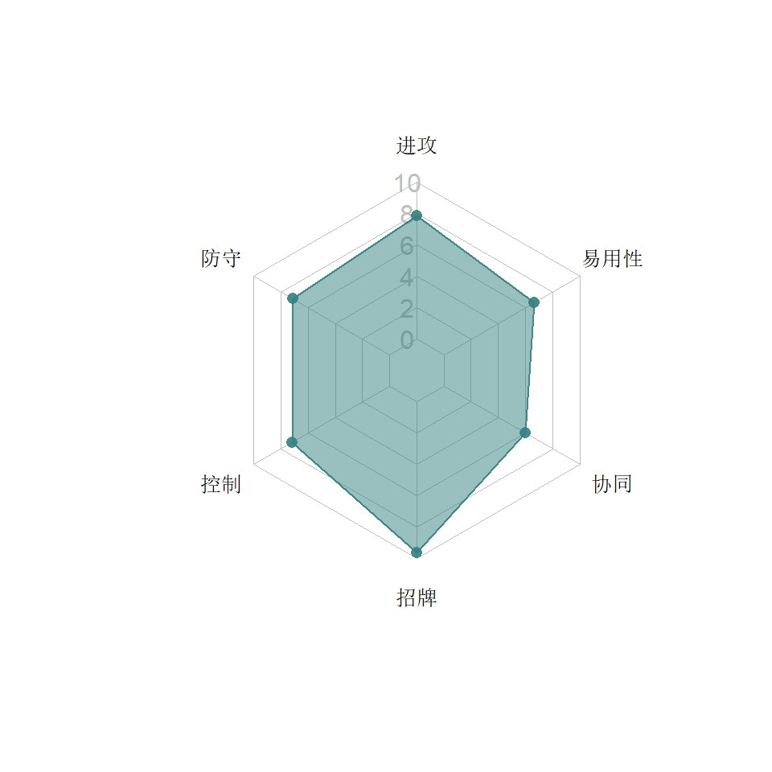
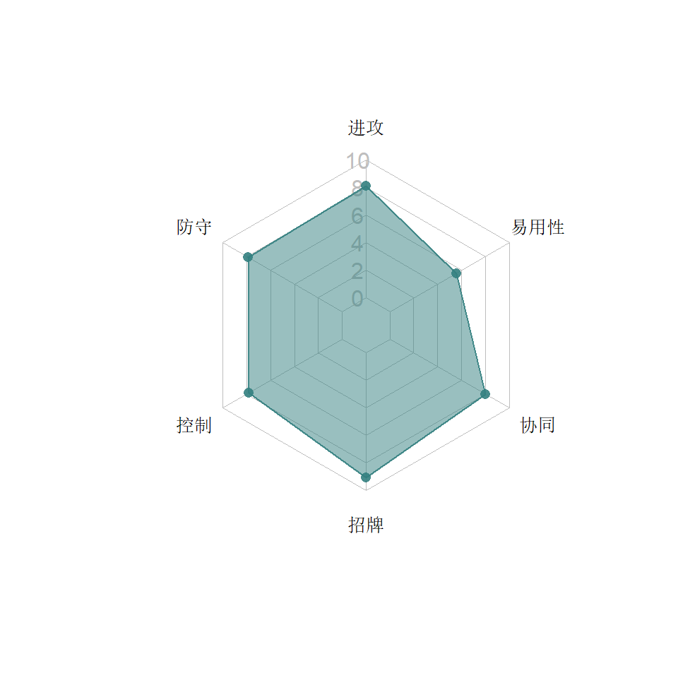
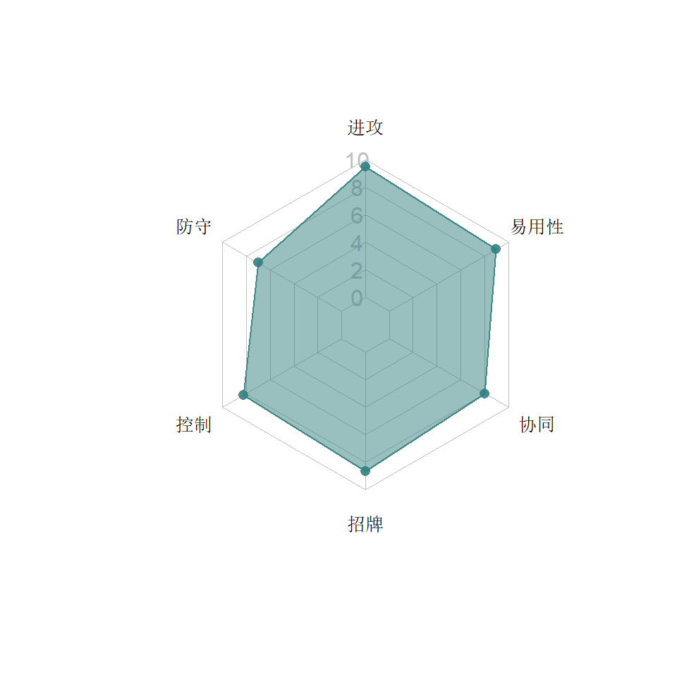
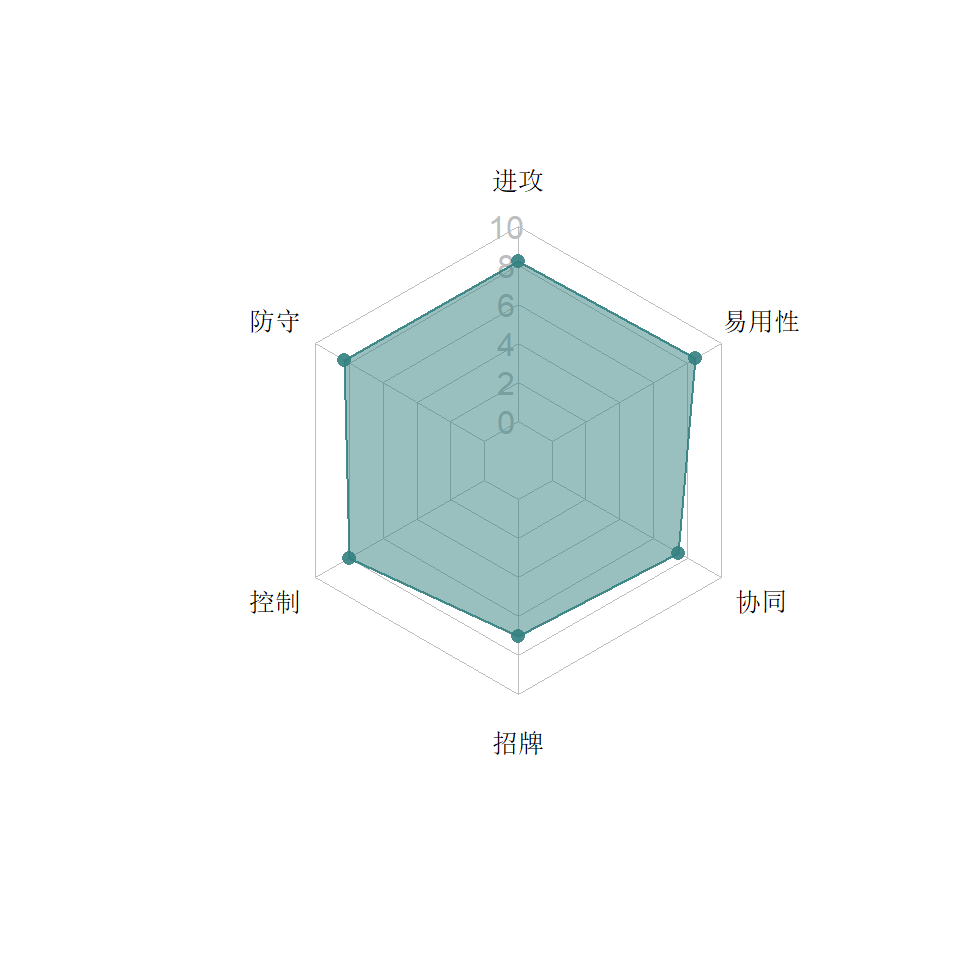
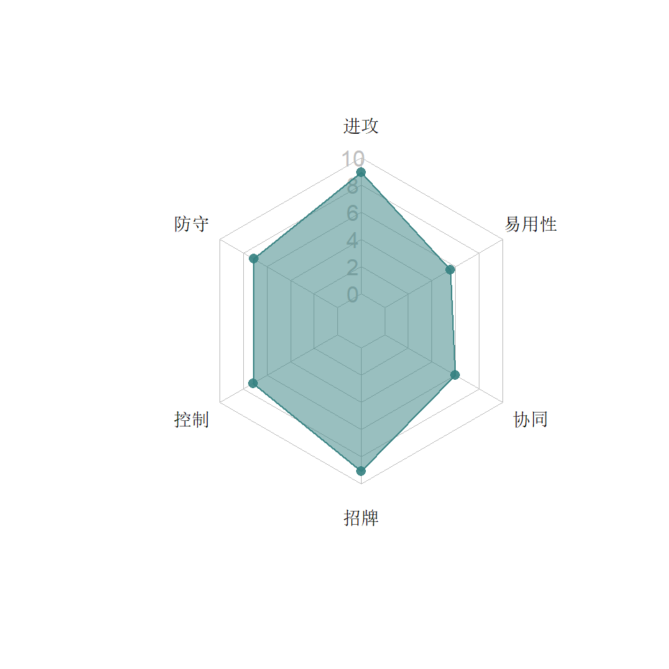

6  侦查系
侦查系
侦查系人才济济，是目前人数最多的类别。虽然各具特色，但高攻击，高暴击和高控场让侦查系机器人不但对科技形成了有效克制，优秀的规避能力在面对其他类别也毫不畏惧。除了碎骨魔。
类别关键字：加攻，暴击，规避，控气，眩晕，控S技，流血，破盾
6.1 风刃


6.1.1 特点分析
风刃是由迷友投票创建的IDW漫画原创角色，之后迅速进入了各种动画作品。大人气的她也作为百炼为战首批机器人发布。高暴击高流血的剑客形象让她仿佛混进侦查系的战士。
6.1.1.1 能力
- 剑刃攻击加25%的暴击率，让风刃出流血的机会很高。
- 近战暴击最高60%概率流血（重击和脚踢其实也是会出流血的），4秒，30~68%的攻击伤害。
- 连砍四层流血会砍晕对手，岂不美哉。技术好的玩家懂得在平砍过程中盯着流血层数，到三层的时候做好准备，一旦砍晕，马上后退点两枪再上去砍，一方面加大输出，另一方面远程小枪击中流血的对手也会35%的概率晕。
- 重击可以穿过远程小枪和远程重击（除了探长的精准弹）。在游戏早期重击距离超长的时候，风刃“点两枪+重击”的打法十分无赖，后来缩短之后重击回归平淡，但还是可以在被声波/蝎子重击压墙角的时候脱身，或者爆威出霸体乱放炮的时候硬怼。
- S1暴击也会流血，但主要的性能是震击和阻止加气。震击前和震击中发动的加气都会被阻断，例如声波的加气、机器人资源模块的加气。但是不能阻断能量功率的加成（例如热破的招牌）。
- S2拥有护甲穿透，可以配合剑圣协同打出高伤害。
- S3虽然热闹，连击数很好看，但是伤害很低，35%的概率晕也很难吸引人使用。
6.2 路障


6.2.1 特点分析
真人电影中活得最久的霸天虎非路障莫属，在百炼为战游戏他倒地起身全方位的规避也仿佛致敬了他这超强的求生欲。
6.2.1.1 能力
- 击倒后起身最高85%的概率规避各种攻击3秒，像一只泥鳅一样根本逮不住，如果没有100%的规避克制（热破，阿尔茜），平时不要随意放倒路障。而玩家的路障被击倒后，则要利用好这3秒的规避和6~7秒的暴击率提升大举反扑。
- 近战攻击根据对手能量提升79-144%的暴击伤害
- 逆火，在爵士和蝎子出来之前这是路障最有特色的技能：远程小枪有
20%25%的概率施加逆火，S1能100%施加- 但是可能是游戏商的疏忽，一直没有像蝎子那样写清逆火伤害到底是多少
- 路障逆火的能力在惊天雷出来前一直不算一种debuff，结果惊天雷净化不了。新人物不能碾压旧人物那还了得？于是厂商改成了可以净化。
- 这样又不可避免伤害了
本来就为数不多的路障玩家们的感情，于是厂商提升到了25%的概率并且增加了一种特性：连续堆上三层逆火后，会转化为“半永久”逆火，也就是路障只要不被击倒，那个逆火图标就没有过期时间（颜色比普通逆火图标要深一点），也不能被净化。
- S2除了伤害挺高还能偷取对方最多36%的能量，注意和警车的消气不同，路障偷过来的能量是加给自己，使用得法的话路障可以反复获得多个S2。
- S3在25秒内提升25%的暴击率。
可以说，对方的能量在路障眼里横竖都是“为我所用”：留着能量不放，路障提升暴击伤害，到了S2可以直接偷过来，放特殊的话，很可能吃逆火，也是伤害。
6.2.2 推荐打法
路障的逆火虽然是他的标志性debuff，但电脑对手的思路清奇——既不会因为处于逆火状态就刻意不放招，也不会因为你想等着逆火伤害就乖乖给你放招。路障的逆火也不像蝎子，层数多了有触发逆火伤害和过期晕点/震击这三种想象空间，所以施加了逆火之后，要放平心态，就当它不存在，正常打。
但这不表示就完全可以不用在意施加逆火，事实上，逆火和S2之间是可以互补的。在长战斗过程中，路障核心的思路是通过S2偷气，将自己的能量稳定在一格多，再反复攒出S2同时保证输出和控气。这个过程并不见得总是称心如意，例如对方先于你放掉了S技，自己一个S2下去没偷到多少气，双方都回到半格不到的初始状态。这时在点枪牵制的过程中如果对方露出破绽，我建议就点上三枪搏多几层逆火先，而不是两枪加5连，因为这样打对方很有可能在你2格气之前到达S2，很多人的S2就算骗出来也是有一定危险性的。路障最舒服的时候就是连招攒满S2的时候对方也刚刚过2格气，但立马就会被偷走，没有机会带着S2自由行动。
6.3 横炮


6.3.1 特点分析
游戏的第一批角色，横炮有着不俗的规避能力、呼之即来的加气能力和堆暴击的能力。中期虽然接受过燃烧能力的加强，但在强手如林的侦查系，这位“豪爽肉搏”的标志性人物始终难以跻身一线。
6.3.1.1 能力
- 每被击中7次获得近战规避。对玩家来说意义不大，因为是挨打。规避率虽然最高只有38%，但在实战中触发频率很高，没有反制手段时打电脑横炮的时候要非常小心，宁可等规避完了再上去打。
- 闪避远程攻击时（不能闪太早，要子弹到面前才闪方可）会喊出“老兄，我没事”，并获得13%的能量，这让横炮在对枪相持的时候也能获得不少能量。
- 闪避对方前冲的时候在6秒内提升暴击伤害。
- 成功暴击时会进一步提升暴击率，最多堆10层，第11层会过期，回到10层，被击倒后丢失，这一点比漂移要好一些。
- S1获得暴击率加成，并有40%的概率击晕2.5秒。这与救护车完全相同，所以一旦发现击晕，落地马上狂按小枪，5发后前冲都来得及。
- S2获得8秒近战规避，这是玩家使用横炮最稳妥的规避方式。并且有60%的概率燃烧。
- S3每击都60%的概率驱散对方一个加成，因为用得比较少，所以不太清楚能驱散的类型，估计和狂飙红蜘蛛类似。100%施加燃烧。
- 另外横炮的近战是7连击，一套拆光犀牛和科技鲨的盾没问题。
6.3.1.2 招牌
开局12秒给自己加气。5级加41.2%，100级加100%（后调整为减半，100级加50%）。短战斗中，横炮可以先声夺人打出S1，一旦打晕，很快又能有S1，运气好的话连晕两次战斗就结束了。
6.3.1.6 2019年8月调整
在游戏进入通用人物币阶段后，老牌的角色一个个被卡邦拿来当月度人物卖，然而不但战擎、铁皮已经上架，连野牛、天火等都闪亮登场时，横炮作为第一批人物还没有出现。在2019年8月1日正式上架前，官方再次对横炮作出平衡性调整：
- 被击倒只丢失5层暴击（之前是全丟）
- 带着10层暴击打中S2，则会在一段时间内获得50%的暴击伤害加成
- 重击净化身上的所有震击并刷新所有暴击伤害加成，侦查系拥有净化的不多，横炮这一调整让他在面对觉醒犀牛或者震击格挡时有一定的优势。起先官方做事做一半，让横炮只有在重击命中时才净化，比起幻影、野兽组出重击即净化的特点，横炮净化的难度大了很多，之后官方听取了玩家的意见，改为发动重击就净化。
- 招牌削弱，满觉醒只给50%的最大能量。虽然看上去是削弱，但由于高觉醒的横炮往往在电脑手上（配机器人资源、科技控制台），这一调整反倒降低了电脑横炮开局不久就出S3的机会，更像是有利玩家的改动。
6.4 警车


6.4.1 特点分析
警车在2017年5月做为独家机器人发布，略晚于声波。很快便以其优秀的控气能力站到了游戏的巅峰。
6.4.1.1 能力
- 后闪时开始充近战buff，最多10层，充能时有概率规避攻击，充能途中被击中/出规避或者警车主动前冲则打断充能，在6秒内警车拥有近战buff。
- 警车的技能中没有写明，但他的远程小枪是有概率晕的。根据扒出来的数据显示，平时一梭子弹里的第一发有10%的概率晕1.5秒，充能时开枪则概率上升到80%。
- S1：这应该是游戏中价值最高的S1之一，能与之抗衡的只有震荡波和斗擎。因为此招命中会迅速地削减对方大量能量，5阶的警车一次砍掉对方36.4%，对方气红的危急时刻可以迅速变成只剩S1。
- S2：在亡灵天尊S1出来之前，警车的S2一直被认为是游戏中最难躲闪的大招。出招动作阴，全屏抓人，侧闪无效，伤害爆表，电脑的警车冷不丁给你来个S2很可能一招把你打回解放前。玩家一般更钟意S1控场，S2的应用场合不多，例如可以用来打通天晓，堆满对方10层物理后一个S2打出高伤害。另外，这个技能可以触发小黄蜂的近战规避，要小心7。
- S3：跟优秀的S1/S2比没有太多用武之地。能量锁定虽然有16秒，但在动画中就消耗了不少时间。但有时也会因为躲在屏幕一边打相持没找到机会连S1或者S2，充气又太快到了S3，也不失为一种放心输出的机会。
6.4.1.2 招牌
充能完毕给自己加气。这是游戏中公认数一数二的招牌，它让警车在不需要碰到对方的前提下给自己加气，再配合S1的减气，可以让警车始终将对方的特殊技扼杀在萌芽状态，再难的敌人也如同拔了牙的老虎。很多人认为警车招牌越高越好，实则未必，后面打法中会提到原因。
6.4.2 推荐打法
虽然没有觉醒的警车实力差了一截，但无论什么战斗，警车都是围绕S1来限制对手的，区别只是未觉醒时只能靠攻击来加气，觉醒后循环套路更明显。
后闪开始充能，充能过程中的侧闪，点枪，近战，重击甚至S技都不会打断充能，所以一般是在充能过程中点枪牵制，对方实在冲过来了也可以侧闪反击。有S1之后将对方气减下，再找机会充能，如此反复。
这里面要注意几个问题：
- 圣贤时间：警车的玩家都会注意到，警车的加攻buff的6秒延时有时反而成了自己的负担。在S1打完之后如果buff没有结束，后闪是会不重新充能的，这会大大影响战略部署，很多警车的玩家就是处理不好这个“圣贤时间”导致失去对场面的控制，让对方杀入近战范围，下次充能容易被打断。要处理好圣贤时间有几个办法：
- 充能完之后稍等一会再进攻。保证在五连+S1之后充能结束。当然，战况瞬息万变，机会转瞬即逝，实在敌人扑过来，当然还是得侧闪反击回去。这时就要用第二种方式。
- 等敌人被S1击倒后，用小枪节奏的变换牵制。把节奏控制在敌人起身后点一枪，看到侧闪再点两枪，让敌人轻易过不来，然后buff消失马上后闪。
- 击倒前冲压制。根据经验，对方起身没有S技的时候，前冲压起身有7成的概率可以直接打中（因为对方起身会侧闪/出招/重击），如果对方靠在版面下边缘，概率有90%会侧闪并被击中。即使不被打中，也多会防御。打中的话就5连打完后闪，下一次充能就开始了，防御就四连一重击，圣贤时间也拖延完了。而如果是在盟战三厅，很可能5连后又有一个S1，再继续前冲压起身……当然，这个技巧对震击格挡模块，搅拌者、天火和恐龙勇士禁用。
- 觉醒等级的问题：100觉醒的警车10层充能加40%的气，再配合他的点枪连击，很容易溢出到S2，仓促放S1容易造成定序器精通无法触发和充满加成的近战少打几下，同时失去循环往复的节奏感。30~50觉醒的警车的加气比例反而更容易打出全场0封对手S技的套路。当然这并不是说100觉醒就没用，而是玩家要了解自己警车在充能中获得的能量比例，也要了解一套点枪连击到底加多少气，来合理促成S1循环，例如觉醒特别高的时候，近战两三拳就可以出S1了；气到了1.5格的时候，就要找机会直接放掉S1而不是再充一次造成溢出。警车在对战时最擅长的就是控制对手，而最容易坑到自己的就是因为S1不能及时到手，而失去节奏的控制。
6.5 小黄蜂


6.5.1 特点分析
为了与战术大黄蜂区分，玩家干脆把侦查大黄蜂唤为小黄蜂，这也与他G1的可爱侦察兵形象吻合。小黄蜂被Kabam做为独家人物在2017年圣诞节发布，独特的获取方式让很多玩家至今也没能拿到。使用乖巧与金轮水晶搏概率的方式让玩家趋之若鹜。后来在“世代任务”中作为完成全任务的奖励得到了普及。依然错过的玩家，能在泰坦货币商店以17万的价格购得。
6.5.1.1 能力
- 后闪获得近战规避加成，触发规避后消失。注意：会规避警车的S2。这让小黄蜂作为敌人的时候特别难缠。
- 侧闪获得暴击率加成（+20~28%），最多攒三个，打中对方时（无论近战/远程，无论是否暴击）每次消耗一个。
- 暴击会瓦解任何护盾并施加5秒震击。这让小黄蜂对付多个科技系角色游刃有余，并且他还能打破能量晶体护盾这种变态模块，把本来烦死人的拉锯战变回到竞技场难度。
- S1提升60%的暴击伤害，配合小黄蜂可以攒到的三个暴击率加成，在连S技时的技巧是打一到两拳马上跟S1，否则S1打不出暴击就亏了。
- S2伤害不俗并锁气10秒，配合招牌，可以连续对敌人形成不错的控制。
- S3得到20个暴击率加成，打中对方时每次消耗一个，这也弥补了S3伤害很低的问题。并且因为S3全程算近战，觉醒后整个过程还是加气的。
6.6 反冲

6.6.1 特点分析
反冲在大师难度前发布，当时有人发布了用高觉醒碎骨魔站着不动让反冲Boss打，结果反而赢得比赛的视频，迅速给大家“反冲垃圾”的印象，也让官方咬牙切齿的为后续的特殊任务研究了一个“流血免疫”模块来反制。很长一段时间基本上没有人去研究反冲优秀的能量控制能力——
直到气天尊的出现。
6.6.1.1 能力
- 每次近战和飞镖暴击能给对手打出能量流失。但假如你认为就这样就能控制对方的气那就错了——流量流失的比例相当低，你一套近战下去，对方能量肯定还是往上走的更多。当然，这倒是可以很有效的让对方的S3始终充不满，可另一方面长达10秒的能量流失也给了那些满一格气就能获得技能的对手（狂飙，蝎子，震天尊）更多的触发技能的机会——充满一格、减到一格以下、再充满、再减……
- 所以说在对方身上有多层能量流失的时候，最好用S1把它们转化为震击获取很好的输出。尤其是面对身上有能量流失的对手，反冲自己的能量功率+50%，所以弄一个S1很容易。S2加暴击率后运气好会施加很多层能量流失，可以配合下一个S1打输出。
- S3根据对方能量流失的层数每层回3%的血，最好用普通技铺垫足够能量流失，再加上S3动画中的几次攻击，方可最大化续航。
- 重击可以清除掉对方身上所有的能量提升效果，并且清除自己身上的震击和能量减少效果，按处理掉的效果个数转换为自己的能量。所以在面对机器人资源模块的时候，反冲一个重击就能解决掉，让气天尊回到震天尊的水平。面对震击格挡的模块，反冲也一点都不怕。理论上反冲对付盟战的2厅2线和3星2线应该是游刃有余，但是因为基础能力太差，所以很少有人带上盟战。
- 前冲时被对方闪避会获得规避，这样反冲扑空的时候安全系数大大提高。而面对反冲对手的时候，侧闪反击就不灵了。
6.6.1.2 招牌
概率触发变形齿轮破坏，此时对方的能量功率降低30%，持续10秒，并且在这个过程中如果变形的话会直接晕掉（与其说是变形还不如说就是重击，因为声波重击过程中不变形也会晕，录音机S1变形也不会晕）。初始概率1/3左右。由于反冲的重击回弹破绽大，所以不宜滥用，适合对付一些重击非常容易预测的对手，比方说声波或者出霸体的爆威。
6.7 黄豹


6.7.1 特点分析
作为第5位野兽机器人，侦查系的黄豹怪异的设计、油腻的大皮鞋虽然丑哭了一群粉丝，但他拥有游戏中名列前茅的单兵作战能力和完备的设计理念，发布后迅速爬到了食物链的顶端。盟战中一厅的Boss黄豹也是个杀人不眨眼的恶魔。
6.7.1.1 能力
豹子的设计亮点：
- 固有10%的能量攻击抗性，做为侦察，是提高了一定的续航。
- 不怕偷气减气（让警车震荡波无语），保证了自己能量的稳定，也就保证了输出与招牌。
- 普攻打满连击会小幅度加气，可别小看这小幅度的加气，经常可以很有效地充满一格，占得先手。
- 自带暴击流血（30 ~ 40%概率，40 ~ 60%强度，4秒），虽然不见得比剑圣们强，但是打击处于流血时对方能量效率降低30%，并且和S1的修复格挡形成了配合。
- 前冲和重击的时候无视对方远程攻击（包括S技中的远程攻击）——用别的角色，猜到对方要开枪很可能要对枪或者侧闪，黄豹？直接冲过去！因为这个特性要么可以直接穿透打中对手，要么就100%规避，所以在前冲或者重击的过程中一定要狂按右边，以便规避时第一时间抢攻。
- S1施加流血的同时锁回血，克死了震荡波/救护车/纳米千/爆威/科技蝎，黄蜂就算能复活，也是空血复活。
- S2高伤害还提高自己能量功率
- S3锁气+漏气专治打红；
- S2和S3发动时，对方的气越少杀伤力越大，如有机会最好在骗招之后使用。但是不建议为了骗招错过招牌的有效时间。
6.7.1.2 招牌
这是一个面面俱到的神奇招牌：
- 首先是阻止对方触发能力的效果。具体来说，就算能力图标会出现，但是不起效果，比如声波有护盾也不能反弹子弹。不能阻止黄蜂的复活，但是复活中不会回血。震天尊的白球是不能阻止他无敌的。其他大部分能力如回血、DOT都是可以阻止的。
- 其次是招牌过程中打穿对手所有减伤，之前写的是护甲、护盾，但不知道何时改成了只有护甲。总之猩猩引以为傲的抗暴护甲，黄豹一个S2就能保证输出。
- 招牌有效期内黄豹的攻击不会被规避，所以连接S技是非常稳的。
- 招牌有效期内黄豹自己有概率规避，让黄豹有招牌的时候可以更加莽撞。
- 这前面几个特性是与觉醒等级无关，觉醒等级只是影响暴击率（10~40%）。所以几乎只要觉醒一次，就把黄豹隐藏的能力彻底解锁。
但是注意，招牌有效期就4秒，并不是很长。
6.8 爵士


6.8.1 特点分析
爵士曾经一度是玩家呼声最高需要新增的机器人，最终游戏公司放出了这位角色，并且配备了很独特的技能。在爵士最初发布的时候，是可以配合战擎无限堆加攻，后来被官方限制在了30层。
6.8.1.1 能力
- 混乱：重击击中敌人的时候，会给敌人施加混乱并减攻。让对手有更多的机会主动放大招。爵士这种独特的技能，对于骗不出大招的玩家来说相当有用。但是电脑依然会在特定的情况下坑人，就是不放大招你能把我怎样？爵士的重击在没有混乱的对手身上打了不给对方加能量，并且输出很高。
- 暴击加成：5次连击加一层暴击率，爵士可以轻轻松松得到非常高的暴击率。
- 当爵士躲掉对手特殊技的第一下之后将会触发规避，此后的所有攻击都有概率规避掉。
- S1打击混乱的对手时，每一击都有20%的概率打晕3秒，暴击击打眩晕的对手时会加暴击伤害。
- S2和重击效果相同，并当场锁定对方的第3招。此后对方只要没有解除混乱状态，第3招就一直锁定。爵士在面对即将气红的对手时，有了这一招可谓安然无恙。因为对手在三格气的时候被锁了第三招处于混乱，也会很快放掉第2招，红气警报瞬间解除。即使电脑一时不放，采用放风筝的方法打中重击刷新混乱时间，早晚能骗出来。
- S3：爵士出来之后有人笑谈说逆火的祖宗来了——此招施加一个永久逆火，并且对方无法移除。此后再配合骗招能给爵士持续的被动输出。
6.8.1.2 招牌
耗竭：处于混乱的对手，招式每打空一下就会被扣气一定的百分比。5级扣1.5%，100级扣6%。换句话说爵士只要混乱打中对手，然后和对方展开灵巧的闪躲，就能把对方的气给扣下来。不仅如此，对方因为扣气而失去一招必杀时（从红变黄，从黄变绿，从绿变灰）还会晕一秒。例如爵士在打红对手然后用s2锁定对方第3招的时候，对方就算不放大招，只要一招被闪过，就可以把3格气减到不足3格，从而晕掉。
然而这个招牌，更多的时候是在帮倒忙——因为在混乱状态中，对方最好是能够正常行动放出大招，而不是晕掉。看见对方晕掉你上去打，实际上又把气给打满了。而且这晕的时间是个恒定值，不管怎么觉醒都只有一秒，实在是太短反应不过来。
指小黄蜂的玩家要小心，因为规避了第一下，很可能吃第二下！↩︎